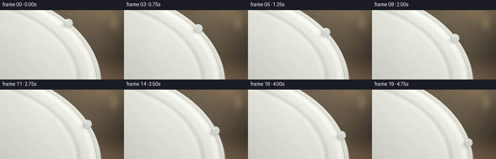
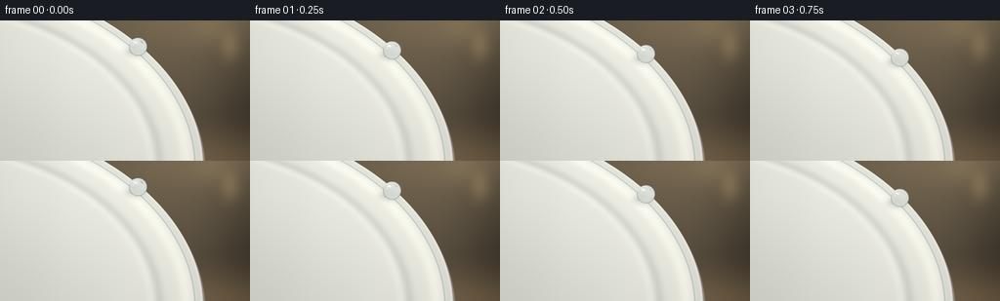
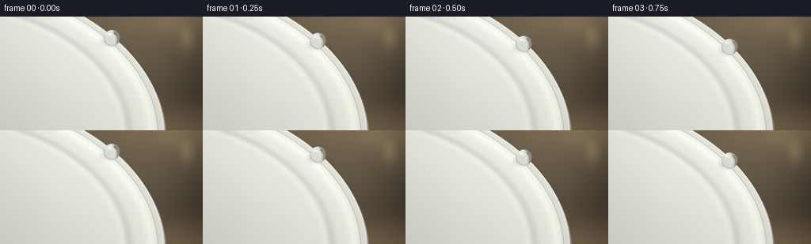
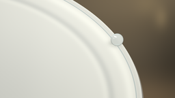

CODING AGENTS AS PIXEL WORLD MODELS
traex/GPT-6.1-Sol · mechanics_0051
点击播放 · 原生 RGB 像素
逐轮保存的候选
回放视频、检查图与代码变化。
每份候选均可单独播放。实际图片检查记录在下方工具轨迹中。
候选 01播放与检查图
点击播放 · 原生 RGB 像素


展开代码变化
--- 上一保存版本 +++ 本次保存版本 @@ -0,0 +1,134 @@ +"""Procedural macro photograph animation of a spherical water bead on a plate.""" +from pathlib import Path +import numpy as np +from PIL import Image +from artifact_io import save + +ROOT=Path(__file__).resolve().parent +W,H,S=256,144,4 +w,h=W*S,H*S +y,x=np.mgrid[0:h,0:w].astype(np.float64) +x=(x+.5)/S; y=(y+.5)/S +rng=np.random.default_rng(52) + +def gaussian(x,y,cx,cy,sx,sy): + return np.exp(-.5*((x-cx)/sx)**2-.5*((y-cy)/sy)**2) +def mix(a,b,t): + return a*(1-t[...,None])+np.asarray(b)*t[...,None] + +# An unfocused, warm studio background, with a large soft window at upper left. +bg=np.zeros((h,w,3),float)+np.array([81.,72.,59.]) +bg+=gaussian(x,y,197,-23,91,67)[...,None]*np.array([42,36,25]) +bg-=gaussian(x,y,273,85,40,52)[...,None]*np.array([31,27,22]) +bg+=gaussian(x,y,220,145,67,23)[...,None]*np.array([30,21,11]) +bg+=gaussian(x,y,236,27,7,11)[...,None]*np.array([26,22,14]) +bg+=gaussian(x,y,216,6,14,13)[...,None]*np.array([12,10,5]) +bg+=np.sin(.095*y+.005*x)[...,None]*1.0 +bg+=rng.normal(0,.20,(h,w,1)) + +# Tilted oval plate: its outer lip traverses the image diagonally and curves down. +cx,cy,rx,ry=-84.,151.,292.,199. +q=np.sqrt(((x-cx)/rx)**2+((y-cy)/ry)**2) +# Local scale for an accurate narrow glazed edge. +grad=np.sqrt(((x-cx)/rx**2)**2+((y-cy)/ry**2)**2)/np.maximum(q,1e-6) +d=(q-1)/np.maximum(grad,1e-5) +qs=np.sqrt(((x-cx-2.2)/rx)**2+((y-cy-4.2)/ry)**2) +plate=bg.copy() +# Porcelain sidewall is shaded and gently rounded, visibly different from the face. +side_cov=np.clip((1-qs)*185+.5,0,1) +side=np.zeros_like(plate)+np.array([158,156,147]) +side+=gaussian(x,y,153,42,86,66)[...,None]*np.array([37,36,33]) +side-=gaussian(x,y,201,139,28,40)[...,None]*np.array([18,18,15]) +plate=mix(plate,side,side_cov) +# White ceramic dish face, curved rim ridges and concave center. +face=np.zeros_like(plate)+np.array([228.,228.,217.]) +face+=gaussian(x,y,99,-5,140,100)[...,None]*np.array([18,18,18]) +face-=gaussian(x,y,-19,133,121,107)[...,None]*np.array([24,23,20]) +face+=np.exp(-((q-.942)/.023)**2)[...,None]*np.array([14,14,13]) +face-=np.exp(-((q-.847)/.020)**2)[...,None]*np.array([19,18,16]) +face+=np.exp(-((q-.822)/.018)**2)[...,None]*np.array([9,9,8]) +face-=np.exp(-((q-.984)/.010)**2)[...,None]*np.array([12,12,11]) +# Fine blue-gray ring beneath the glaze, kept subdued. +ring=np.exp(-((q-.972)/.0025)**2)*.39 +face=mix(face,[112,141,149],ring) +# Minuscule porcelain grain is not noisy at final resolution. +face+=rng.normal(0,.27,(h,w,1)) +face+=np.sin(x*.092+y*.013)[...,None]*.35 +plate=mix(plate,face,np.clip(.5-d*S,0,1)) +plate=np.clip(plate,0,255) + +# Bilinear sampling for the curved water/air optical interface. +def sample(img,xx,yy): + xx=np.clip(xx*S-.5,0,w-1.001); yy=np.clip(yy*S-.5,0,h-1.001) + ix=np.floor(xx).astype(int); iy=np.floor(yy).astype(int) + fx=(xx-ix)[...,None]; fy=(yy-iy)[...,None] + return ((img[iy,ix]*(1-fx)+img[iy,ix+1]*fx)*(1-fy)+ + (img[iy+1,ix]*(1-fx)+img[iy+1,ix+1]*fx)*fy) + +frames=[] +for k in range(20): + t=k/19 + py=27+83*(.82*t+.18*t*t) + edge=cx+rx*np.sqrt(1-((py-cy)/ry)**2) + px=edge-3.0 + r=9.25 + # The bead rolls smoothly without flattening or turning into a streak. + dx=(x-px)/r; dy=(y-py)/r + rr=dx*dx+dy*dy + z=np.sqrt(np.maximum(1-rr,0)) + frame=plate.copy() + contact=gaussian(x,y,px-4.4,py+5.5,6.0,3.5)*.31*np.clip(.5-d*S,0,1) + frame=mix(frame,[92,99,93],contact) + # Slight damp contact caustic on the glaze, rather than a trailing smear. + caust=gaussian(x,y,px-4.8,py+8.1,3.8,.85)*.33*np.clip(.5-d*S,0,1) + frame=mix(frame,[255,255,240],caust) + + # Analytical refraction through a spherical air/water/air boundary. + # Camera rays travel toward negative z. Front surface normals are (dx,dy,z). + eta=1/1.333 + cost=np.sqrt(np.maximum(1-eta*eta*(1-z*z),0)) + fact=eta*z-cost + tx=fact*dx; ty=fact*dy; tz=-eta+fact*z + # Intersection at the back of sphere. + dist=-2*(dx*tx+dy*ty+z*tz) + bx=dx+dist*tx; by=dy+dist*ty; bz=z+dist*tz + dot=tx*bx+ty*by+tz*bz + eta2=1.333 + ct2=np.sqrt(np.maximum(1-eta2*eta2*(1-dot*dot),0)) + # Exit normal points into the sphere in the refract formula. + fac2=eta2*dot-ct2 + ox=eta2*tx-fac2*bx; oy=eta2*ty-fac2*by; oz=eta2*tz-fac2*bz + travel=np.maximum(0,(-1.20-bz)/np.minimum(oz,-.08)) + # Restrained refraction: familiar ceramic colors still shine through the drop. + sx=px+r*(bx+travel*ox); sy=py+r*(by+travel*oy) + water=sample(plate,sx,sy) + water=water*.93+np.array([3.5,7.,8.]) + + # Fresnel reflection of the large softbox and surrounding dark studio. + fres=.0204+(1-.0204)*(1-z)**5 + env=np.zeros_like(water)+np.array([76.,90.,91.]) + env+=gaussian(dx,dy,-.46,-.60,.66,.24)[...,None]*np.array([143,146,142]) + env-=gaussian(dx,dy,.61,.20,.27,.70)[...,None]*np.array([37,41,36]) + water=mix(water,env,np.minimum(.85,fres)) + # Soft crescent on top left and a small, bright window reflection. + arc=np.exp(-((np.sqrt((dx+.04)**2+(dy+.01)**2)-.87)/.044)**2) + arc*=gaussian(dx,dy,-.48,-.64,.48,.34) + water=mix(water,[235,249,248],arc*.72) + # A rounded rectangular softbox reflection, curved by the spherical surface. + u=(dx+.30)*.93+(dy+.48)*.37 + v=-(dx+.30)*.37+(dy+.48)*.93 + glint=np.exp(-((u/.24)**6+(v/.100)**4)) + water=mix(water,[255,255,253],glint*.95) + tiny=gaussian(dx,dy,-.53,-.23,.050,.050) + water=mix(water,[251,255,255],tiny*.73) + # A bottom lens glimmer reinforces the closed, spherical silhouette. + bottom=gaussian(dx,dy,.05,.79,.39,.050)*.35 + water=mix(water,[216,237,232],bottom) + cov=np.clip((1-np.sqrt(rr))*r*S+.5,0,1) + frame=mix(frame,water,cov) + # Gentle macro vignette; the camera is locked off throughout the shot. + vign=1-.045*((x-134)/180)**2-.022*((y-66)/103)**2 + frame=np.clip(frame*vign[...,None],0,255).astype(np.uint8) + frames.append(np.asarray(Image.fromarray(frame).resize((W,H),Image.Resampling.LANCZOS))) + +save(np.stack(frames).astype(np.uint8),ROOT)
候选 02播放与检查图
点击播放 · 原生 RGB 像素


展开代码变化
--- 上一保存版本
+++ 本次保存版本
@@ -71,7 +71,7 @@
py=27+83*(.82*t+.18*t*t)
edge=cx+rx*np.sqrt(1-((py-cy)/ry)**2)
px=edge-3.0
- r=9.25
+ r=10.1
# The bead rolls smoothly without flattening or turning into a streak.
dx=(x-px)/r; dy=(y-py)/r
rr=dx*dx+dy*dy
@@ -102,7 +102,15 @@
# Restrained refraction: familiar ceramic colors still shine through the drop.
sx=px+r*(bx+travel*ox); sy=py+r*(by+travel*oy)
water=sample(plate,sx,sy)
- water=water*.93+np.array([3.5,7.,8.])
+ water=water*.96+np.array([1.5,4.,5.])
+ # The plate/background boundary bends inside the tiny lens: a narrow
+ # amber-gray refracted crescent, not an opaque pearl-like diffuse fill.
+ boundary=.47+.20*dy-.27*dy*dy
+ lensedge=np.clip((dx-boundary)*4.4,0,1)*np.clip(z*3,0,1)
+ outside=sample(bg,px+15+dx*4,py+dy*8)
+ water=mix(water,outside,lensedge*.65)
+ band=np.exp(-((dx-boundary)/.055)**2)*np.clip(z*4,0,1)
+ water=mix(water,[117,137,135],band*.32)
# Fresnel reflection of the large softbox and surrounding dark studio.
fres=.0204+(1-.0204)*(1-z)**5
可观测工具轨迹
实际执行的命令与返回图片。
命令 1exit 0
/bin/bash -lc 'ls -la && cat prompt.txt && cat GENERATION_RULES.md && cat task_spec.json'
命令 2exit 0
/bin/bash -lc 'cat artifact_io.py'
命令 3exit 0
/bin/bash -lc "cat > generate.py <<'PY'
\"\"\"Procedural macro photograph animation of a spherical water bead on a plate.\"\"\"
from pathlib import Path
import numpy as np
from PIL import Image
from artifact_io import save
ROOT=Path(__file__).resolve().parent
W,H,S=256,144,4
w,h=W*S,H*S
y,x=np.mgrid[0:h,0:w].astype(np.float64)
x=(x+.5)/S; y=(y+.5)/S
rng=np.random.default_rng(52)
def gaussian(x,y,cx,cy,sx,sy):
return np.exp(-.5*((x-cx)/sx)**2-.5*((y-cy)/sy)**2)
def mix(a,b,t):
return a*(1-t[...,None])+np.asarray(b)*t[...,None]
# An unfocused, warm studio background, with a large soft window at upper left.
bg=np.zeros((h,w,3),float)+np.array([81.,72.,59.])
bg+=gaussian(x,y,197,-23,91,67)[...,None]*np.array([42,36,25])
bg-=gaussian(x,y,273,85,40,52)[...,None]*np.array([31,27,22])
bg+=gaussian(x,y,220,145,67,23)[...,None]*np.array([30,21,11])
bg+=gaussian(x,y,236,27,7,11)[...,None]*np.array([26,22,14])
bg+=gaussian(x,y,216,6,14,13)[...,None]*np.array([12,10,5])
bg+=np.sin(.095*y+.005*x)[...,None]*1.0
bg+=rng.normal(0,.20,(h,w,1))
# Tilted oval plate: its outer lip traverses the image diagonally and curves down.
cx,cy,rx,ry=-84.,151.,292.,199.
q=np.sqrt(((x-cx)/rx)**2+((y-cy)/ry)**2)
# Local scale for an accurate narrow glazed edge.
grad=np.sqrt(((x-cx)/rx**2)**2+((y-cy)/ry**2)**2)/np.maximum(q,1e-6)
d=(q-1)/np.maximum(grad,1e-5)
qs=np.sqrt(((x-cx-2.2)/rx)**2+((y-cy-4.2)/ry)**2)
plate=bg.copy()
# Porcelain sidewall is shaded and gently rounded, visibly different from the face.
side_cov=np.clip((1-qs)*185+.5,0,1)
side=np.zeros_like(plate)+np.array([158,156,147])
side+=gaussian(x,y,153,42,86,66)[...,None]*np.array([37,36,33])
side-=gaussian(x,y,201,139,28,40)[...,None]*np.array([18,18,15])
plate=mix(plate,side,side_cov)
# White ceramic dish face, curved rim ridges and concave center.
face=np.zeros_like(plate)+np.array([228.,228.,217.])
face+=gaussian(x,y,99,-5,140,100)[...,None]*np.array([18,18,18])
face-=gaussian(x,y,-19,133,121,107)[...,None]*np.array([24,23,20])
face+=np.exp(-((q-.942)/.023)**2)[...,None]*np.array([14,14,13])
face-=np.exp(-((q-.847)/.020)**2)[...,None]*np.array([19,18,16])
face+=np.exp(-((q-.822)/.018)**2)[...,None]*np.array([9,9,8])
face-=np.exp(-((q-.984)/.010)**2)[...,None]*np.array([12,12,11])
# Fine blue-gray ring beneath the glaze, kept subdued.
ring=np.exp(-((q-.972)/.0025)**2)*.39
face=mix(face,[112,141,149],ring)
# Minuscule porcelain grain is not noisy at final resolution.
face+=rng.normal(0,.27,(h,w,1))
face+=np.sin(x*.092+y*.013)[...,None]*.35
plate=mix(plate,face,np.clip(.5-d*S,0,1))
plate=np.clip(plate,0,255)
# Bilinear sampling for the curved water/air optical interface.
def sample(img,xx,yy):
xx=np.clip(xx*S-.5,0,w-1.001); yy=np.clip(yy*S-.5,0,h-1.001)
ix=np.floor(xx).astype(int); iy=np.floor(yy).astype(int)
fx=(xx-ix)[...,None]; fy=(yy-iy)[...,None]
return ((img[iy,ix]*(1-fx)+img[iy,ix+1]*fx)*(1-fy)+
(img[iy+1,ix]*(1-fx)+img[iy+1,ix+1]*fx)*fy)
frames=[]
for k in range(20):
t=k/19
py=27+83*(.82*t+.18*t*t)
edge=cx+rx*np.sqrt(1-((py-cy)/ry)**2)
px=edge-3.0
r=9.25
# The bead rolls smoothly without flattening or turning into a streak.
dx=(x-px)/r; dy=(y-py)/r
rr=dx*dx+dy*dy
z=np.sqrt(np.maximum(1-rr,0))
frame=plate.copy()
contact=gaussian(x,y,px-4.4,py+5.5,6.0,3.5)*.31*np.clip(.5-d*S,0,1)
frame=mix(frame,[92,99,93],contact)
# Slight damp contact caustic on the glaze, rather than a trailing smear.
caust=gaussian(x,y,px-4.8,py+8.1,3.8,.85)*.33*np.clip(.5-d*S,0,1)
frame=mix(frame,[255,255,240],caust)
# Analytical refraction through a spherical air/water/air boundary.
# Camera rays travel toward negative z. Front surface normals are (dx,dy,z).
eta=1/1.333
cost=np.sqrt(np.maximum(1-eta*eta*(1-z*z),0))
fact=eta*z-cost
tx=fact*dx; ty=fact*dy; tz=-eta+fact*z
# Intersection at the back of sphere.
dist=-2*(dx*tx+dy*ty+z*tz)
bx=dx+dist*tx; by=dy+dist*ty; bz=z+dist*tz
dot=tx*bx+ty*by+tz*bz
eta2=1.333
ct2=np.sqrt(np.maximum(1-eta2*eta2*(1-dot*dot),0))
# Exit normal points into the sphere in the refract formula.
fac2=eta2*dot-ct2
ox=eta2*tx-fac2*bx; oy=eta2*ty-fac2*by; oz=eta2*tz-fac2*bz
travel=np.maximum(0,(-1.20-bz)/np.minimum(oz,-.08))
# Restrained refraction: familiar ceramic colors still shine through the drop.
sx=px+r*(bx+travel*ox); sy=py+r*(by+travel*oy)
water=sample(plate,sx,sy)
water=water*.93+np.array([3.5,7.,8.])
# Fresnel reflection of the large softbox and surrounding dark studio.
fres=.0204+(1-.0204)*(1-z)**5
env=np.zeros_like(water)+np.array([76.,90.,91.])
env+=gaussian(dx,dy,-.46,-.60,.66,.24)[...,None]*np.array([143,146,142])
env-=gaussian(dx,dy,.61,.20,.27,.70)[...,None]*np.array([37,41,36])
water=mix(water,env,np.minimum(.85,fres))
# Soft crescent on top left and a small, bright window reflection.
arc=np.exp(-((np.sqrt((dx+.04)**2+(dy+.01)**2)-.87)/.044)**2)
arc*=gaussian(dx,dy,-.48,-.64,.48,.34)
water=mix(water,[235,249,248],arc*.72)
# A rounded rectangular softbox reflection, curved by the spherical surface.
u=(dx+.30)*.93+(dy+.48)*.37
v=-(dx+.30)*.37+(dy+.48)*.93
glint=np.exp(-((u/.24)**6+(v/.100)**4))
water=mix(water,[255,255,253],glint*.95)
tiny=gaussian(dx,dy,-.53,-.23,.050,.050)
water=mix(water,[251,255,255],tiny*.73)
# A bottom lens glimmer reinforces the closed, spherical silhouette.
bottom=gaussian(dx,dy,.05,.79,.39,.050)*.35
water=mix(water,[216,237,232],bottom)
cov=np.clip((1-np.sqrt(rr))*r*S+.5,0,1)
frame=mix(frame,water,cov)
# Gentle macro vignette; the camera is locked off throughout the shot.
vign=1-.045*((x-134)/180)**2-.022*((y-66)/103)**2
frame=np.clip(frame*vign[...,None],0,255).astype(np.uint8)
frames.append(np.asarray(Image.fromarray(frame).resize((W,H),Image.Resampling.LANCZOS)))
save(np.stack(frames).astype(np.uint8),ROOT)
PY
python generate.py"命令 4exit 0
/bin/bash -lc "python - <<'PY'
p='generate.py'
s=open(p).read().replace('r=9.25','r=10.1')
s=s.replace('water=water*.93+np.array([3.5,7.,8.])', '''water=water*.96+np.array([1.5,4.,5.])
# The plate/background boundary bends inside the tiny lens: a narrow
# amber-gray refracted crescent, not an opaque pearl-like diffuse fill.
boundary=.47+.20*dy-.27*dy*dy
lensedge=np.clip((dx-boundary)*4.4,0,1)*np.clip(z*3,0,1)
outside=sample(bg,px+15+dx*4,py+dy*8)
water=mix(water,outside,lensedge*.65)
band=np.exp(-((dx-boundary)/.055)**2)*np.clip(z*4,0,1)
water=mix(water,[117,137,135],band*.32)''')
open(p,'w').write(s)
PY
python generate.py"视觉工具实际返回图片 1

视觉工具实际返回图片 2

视觉工具实际返回图片 3
保存候选 2 份；完成命令 4 次；可验证图片返回 3 张。原始 API 响应与完整日志保留在本地。